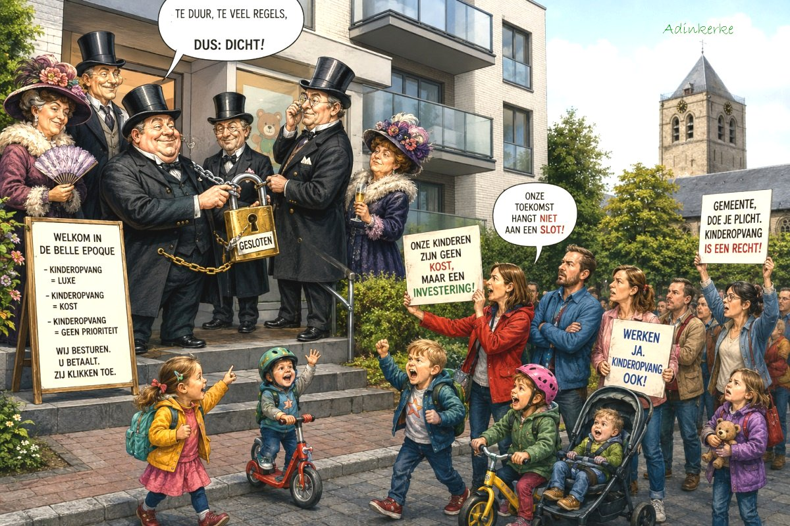
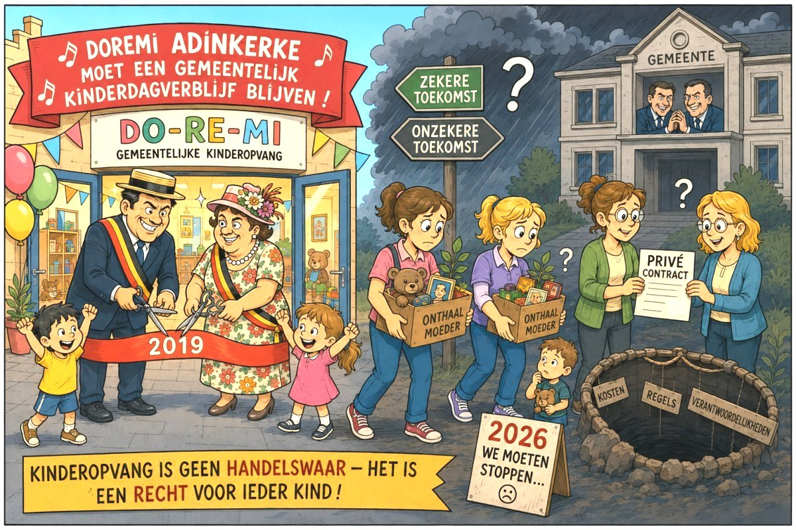

De Panne geeft het op...
De Panne stopt met de gemeentelijke kinderopvang. Is dat behoorlijk bestuur?
Op 22 juni 2026 besliste de Raad voor Maatschappelijk Welzijn (RMW) van De Panne om de gemeentelijke kinderopvang voor baby’s en peuters stop te zetten zodra een externe privé overnemer wordt gevonden. Als streefdatum wordt 1 oktober 2026 vooropgesteld.
Volgens het gemeentebestuur is de dienstverlening in eigen beheer niet langer houdbaar. Als voornaamste redenen worden de moeilijkheden om voldoende onthaalouders te vinden, de gewijzigde Vlaamse regelgeving en de stijgende organisatorische uitdagingen aangehaald.
Opvallend is echter dat dezelfde beslissing tegelijk erkent dat de behoefte aan kinderopvang in De Panne onverminderd blijft bestaan. Er zijn wachtlijsten, de opvang vervult een belangrijke sociale functie en het gemeentebestuur verklaart zelfs dat het zoveel mogelijk opvangplaatsen in De Panne wil behouden.Daar wringt precies het schoentje.
Wanneer een overheid zelf vaststelt dat een essentiële dienstverlening noodzakelijk blijft maar vervolgens beslist die dienstverlening niet langer zelf te organiseren, mag van haar worden verwacht dat zij overtuigend aantoont en in feite en rechte motiveert, waarom die keuze onvermijdelijk is.
De enkele vaststelling dat onthaalmoeders of kinderbegeleiders in de groepsopvang, moeilijk te vinden zijn, volstaat daarvoor niet.
Personeelstekorten zijn vandaag immers een algemeen maatschappelijk probleem. Burgers ondervinden dagelijks hoe moeilijk het geworden is om een huisarts, gynaecoloog, elektricien, dakwerker, loodgieter of garagist etc. te vinden. Voor de burger nog veel lastiger dan voor een lokaal bestuur. Maar het antwoord op een personeelstekort kan moeilijk zijn dat een essentiële publieke dienstverlening eenvoudigweg wordt stopgezet. Besturen betekent problemen oplossen, niet ze doorschuiven naar de inwoners.
Op de RMW werd tevens de indruk gewekt dat de hervorming van minister Caroline Gennez de oorzaak is van deze beslissing. Dat is een te gemakkelijke voorstelling van zaken. De hervorming heeft juist als doel onthaalouders beter te vergoeden en beter sociaal te beschermen. Dat brengt voor organisatoren hogere kosten mee, maar het blijft een beleidskeuze van een gemeentebestuur om die investering al dan niet te doen.
Kinderopvang is bovendien geen luxevoorziening. Zij maakt het mogelijk dat ouders kunnen werken, ondersteunt de ontwikkeling van jonge kinderen en draagt bij tot gelijke kansen. Een lokaal bestuur dat jonge gezinnen wil aantrekken, zou daarom in de eerste plaats moeten investeren in een voldoende en kwaliteitsvol opvangaanbod.
Het is dan ook moeilijk te begrijpen dat een financieel sterke gemeente als De Panne besluit dat zij niet langer in staat zou zijn een vijftigtal gemeentelijke kinderopvangplaatsen zelf te organiseren. Die beslissing is in tegenspraak met de eigen vaststellingen en beleidsdoelstellingen van de Raad voor Maatschappelijk Welzijn. Enerzijds erkent de Raad dat de behoefte aan kinderopvang onverminderd blijft bestaan, anderzijds beslist hij de gemeentelijke kinderopvang in eigen beheer stop te zetten.
De boodschap die het gemeentebestuur hiermee geeft aan de tientallen betrokken kinderen en hun ouders, is bijzonder hard: "Werkende ouders van Adinkerke en De Panne, trek uw plan met uw baby of peuter." Dat is geen visie op gezinsbeleid die een normale inwoner verwacht van een lokaal bestuur anno 2026.
Om die reden werd tegen deze beslissing een administratief beroep ingesteld bij het Agentschap Binnenlands Bestuur. Daarbij wordt de toezichthoudende overheid gevraagd na te gaan of de beslissing voldoende materieel is gemotiveerd en of zij in overeenstemming is met de beginselen van behoorlijk bestuur, waaronder het zorgvuldigheids-, redelijkheids- en motiveringsbeginsel. De uiteindelijke beoordeling behoort toe aan de toezichthoudende overheid.
Maar één vraag blijft ondertussen overeind: Als zelfs een gemeente - die erkent dat de behoefte aan kinderopvang blijft bestaan - haar eigen opvang opgeeft, welk signaal geeft zij dan aan jonge gezinnen die in De Panne willen wonen, werken en kinderen opvoeden ?
Ook het zich de vraag stellen waarom jonge gezinnen zich niet in Adinkerke/De Panne willen komen vestigen of waarom jonge gezinnen met kleine kinderen Adinkerke/De Panne verlaten, is schijnheilig. Het is toch duidelijk dat het "belle époque" beleid dat door het gemeentebestuur van De Panne wordt gevoerd, daarvan de oorzaak is. Deze RMW beslissing is hiervan een schoolvoorbeeld.

De ruimte Is eigendom van de gemeente. De opvang is gevestigd op de benedenverdieping van een nieuwbouwproject van woonmaatschappij IJzer & Zee in de Dorpsstraat in Adinkerke. Het gebouw werd eind april 2019 opgeleverd en sinds begin juli 2019 was de nieuwe opvang operationeel.
De benedenverdieping werd in samenspraak met de woonmaatschappij gerealiseerd, volledig afgestemd op de opvang van baby’s en peuters. Er zijn drie slaapkamers, een grote leefruimte, een ingerichte keuken en een buitenruimte. Er kunnen 14 kinderen opgevangen worden door 2 onthaalouders.

Volgens een artikel in de krant HLN, van 8 november 2023 moesten ouders wachten tot het eerste vrije opvangplaatsje dat pas in 2025 zou vrijkomen in Doremi Adinkerke (dus meer dan 1 jaar). Hoe is de situatie anno 2026?
De beslissing van de Raad voor Maatschappelijk Welzijn (RMW) De Panne, verzoent de blijvende lokale behoefte aan kinderopvang niet met een duurzame en juridisch verantwoorde organisatie van de dienstverlening, in tegenstelling tot wat de RMW in zijn beslissing beweert.
De beslissing verhindert bovendien de omschakeling van de bestaande
groepsopvang door samenwerkende onthaalouders (groepSOO) naar
groepsopvang met subsidie inkomenstarief (Trap 2), zoals voorzien en
ondersteund door Agentschap Opgroeien voor de periode 2026-2027.
Daardoor dreigt De Panne een belangrijke kans te missen om de bestaande
opvangplaatsen te behouden en verder uit te bouwen binnen het nieuwe
Vlaamse beleidskader.
Daarnaast is de beslissing ook feitelijk onuitvoerbaar.
De door de Raad opgelegde voorwaarden en beoordelingscriteria zijn dermate omvangrijk en stringent dat redelijkerwijze niet kan worden verwacht dat een externe partner zal worden gevonden die aan alle voorwaarden voldoet en tegelijk bereid is de volledige werking over te nemen.